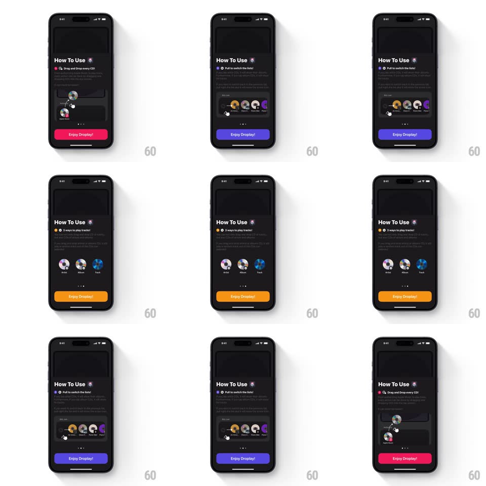

Media
Frame-by-frame

Rebuild this interaction 1:1: Droplay's "How To Use" onboarding - a paged card where each swipe switches the tutorial page (drag-and-drop demo, pull-to-switch lists, three ways to play) while the page's accent color floods the "Enjoy Droplay!" button and title highlights, cycling pink -> purple -> orange -> back.

Rebuild this interaction 1:1: Droplay's "How To Use" onboarding - a paged card where each swipe switches the tutorial page (drag-and-drop demo, pull-to-switch lists, three ways to play) while the page's accent color floods the "Enjoy Droplay!" button and title highlights, cycling pink -> purple -> orange -> back. ## Integration Integration: stack-agnostic spec - springs given as stiffness/damping, timed motions as duration + curve; map every value to your framework and animation library of choice. ## Scene Dark card: "How To Use" header with a small CD glyph, a per-page instruction line with an inline icon, an illustration area (mini player mock or gesture demo), page dots, and a full-width "Enjoy Droplay!" button at the bottom. ## Motion spec Pattern: paged onboarding with per-page accent theming. - Swipe/drag: pages slide horizontally tied to the finger (1:1), the next page peeking in; release past ~40% commits (spring ~380/24, ~300ms). - Accent: each page owns a color (pink, purple, orange); during the swipe the button and icon tints tween continuously between the two pages' colors, proportional to page offset. - The illustration crossfades per page (200ms) with a slight parallax (moves at 0.9x page speed). - Page dots: active dot elongates into a pill and takes the accent color (200ms); others stay small gray dots. ## Calibration - The accent tint is position-coupled, not page-snapped - mid-swipe the button is literally between two colors. - The button label never changes; only its color. ## Reduced motion Pages crossfade (200ms); accent color steps per page; dots update without pill stretch. ## Don't miss - The last page's button is the same button - color cycling is the only change across the flow. - Inline icons in the instruction lines also take the accent color.